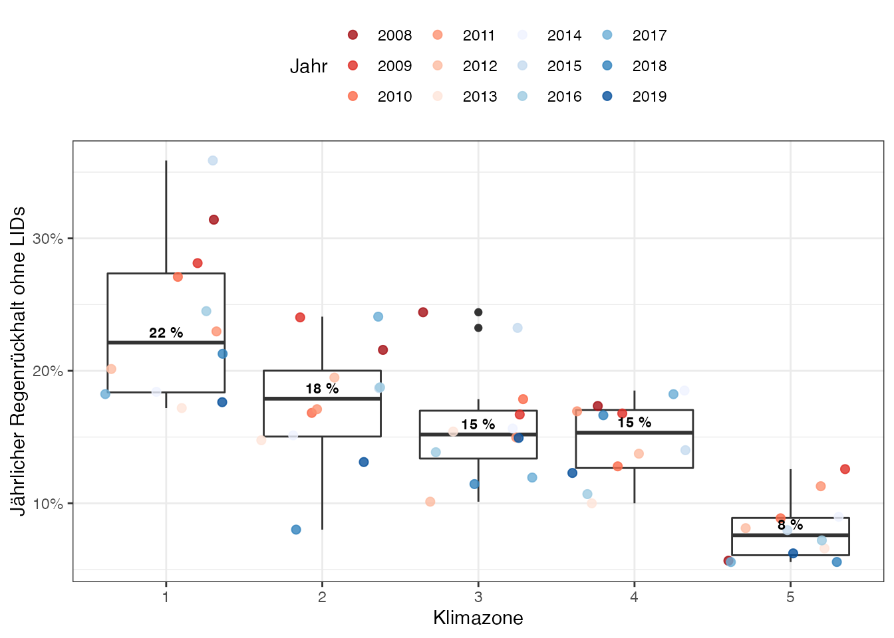

library(keys.lid)
#> SWMM executable not found.
performances <- keys.lid::performances %>%
dplyr::mutate(scenario_name = kwb.utils::multiSubstitute(strings = .data$scenario_name,
replacements = list("through-trench" = "mulde_rigole",
"through" = "mulde",
"with-berm" = "mit-berme",
"no-berm" = "ohne-berme",
"no-drainmat" = "keine-drainagematte",
"with-drainmat" = "mit-drainagematte",
"no-drainage" = "keine-drainage",
"with-drainage" = "mit-drainage",
"per.hour" = "pro.Stunde",
"extensive" = "extensiv",
"intensive" = "intensiv"))) %>%
dplyr::group_by(.data$lid_name_tidy,
.data$scenario_name) %>%
dplyr::mutate(scenario_id = dplyr::cur_group_id())
performances_without_lids <- performances %>%
dplyr::filter(.data$lid_name_tidy == "bioretention_cell",
.data$lid_area_fraction == 0,
.data$scenario_id == 1) %>%
dplyr::mutate(lid_name_tidy = "Referenz",
scenario_name = "Regenr\u00FCckhalt ohne LID")
mycolors <- c(rev(RColorBrewer::brewer.pal(name="Reds", n = 6)),
RColorBrewer::brewer.pal(name="Blues", n = 6))
performances_without_lids %>%
tidyr::unnest(.data$annual) %>%
ggplot2::ggplot(mapping = ggplot2::aes(x = .data$zone_id,
y = 100*.data$vrr)) +
ggplot2::scale_y_continuous(labels = scales::percent_format(scale = 1)) +
ggplot2::geom_boxplot() +
ggplot2::geom_jitter(mapping = ggplot2::aes(col = factor(.data$year)),
size=2, alpha=0.8) +
ggplot2::scale_color_manual(values = mycolors) +
ggplot2::stat_summary(ggplot2::aes(label=sprintf("%d %%", round(..y..,0))),
fun.y = median,
geom="text",
size = 3,
fontface = "bold",
vjust = -0.5,
) +
ggplot2::labs(x = "Klimazone",
y = "J\u00E4hrlicher Regenr\u00FCckhalt ohne LIDs",
col = "Jahr") +
ggplot2::theme_bw() +
ggplot2::theme(legend.position="top")
#> Warning: `fun.y` is deprecated. Use `fun` instead.
ggplot2::ggsave("vrr_reference.jpg",
scale = 1,
width = 7,
height = 5)